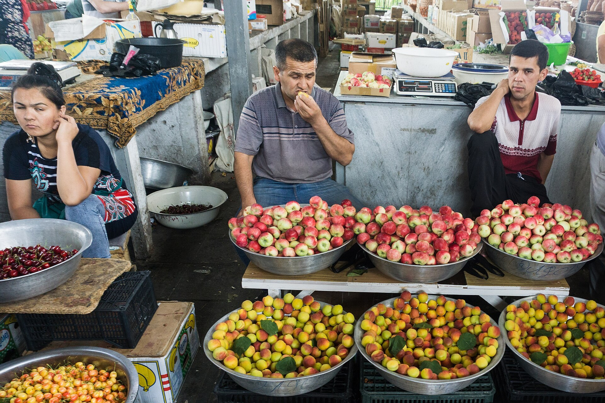

From Plan to Market: Uzbekistan's Early Years of Economic Reform (1991–1996)
After Uzbekistan declared independence on 31 August 1991, the transition from the Soviet planned economy toward a market economy began. Between 1991 and 1996 came gradual privatization, partial price liberalization, the introduction of the national currency — the som — and membership of international financial institutions such as the IMF and the World Bank. The documented dates and figures are set out below.

On 31 August 1991 the Republic of Uzbekistan declared its state independence. The young state inherited a Soviet centrally planned economy heavily dependent on cotton, with the ruble zone still in place at the time. The first stage of the transition from the planned system to a market economy unfolded between 1991 and 1996.
The Inheritance: Cotton, the Ruble and a Planned Economy
In the first years of independence Uzbekistan's economy relied heavily on raw cotton, while its money supply remained tied to Moscow through the ruble zone. According to World Bank documents, the state's monopoly over marketing cotton to world markets in the 1990s channelled a large share of high cotton revenues to the budget. At the same time, a ruble issued centrally limited Uzbekistan's ability to run its own monetary policy.
A Gradual Approach: the 'Uzbek Model'
It is widely documented that Uzbekistan chose a gradual (evolutionary) reform path rather than 'shock therapy.' The officially stated five principles of reform, associated with President Islom Karimov, were: the priority of the economy over politics; the leading role of the state as chief reformer; the rule of law; strong social protection; and a gradual, phased transition to a market economy. These are presented here as the state's officially articulated policy principles.
According to academic sources, the official line was that the rapid reforms recommended by the international financial institutions did not account for Uzbekistan's particular conditions; the government therefore preferred to carry out reforms gradually and on its own terms.
The Start of Privatization (1992–1993)
Privatization began with housing: residents gained the right to own their dwellings. In 1992 the government introduced partial price liberalization, unification of the foreign-exchange markets, new taxes, the removal of import tariffs, and the privatization of small shops and residential housing. A State Property Committee oversaw the process.
According to the U.S. Library of Congress country study, a state agency set a goal of moving 10–15 percent of state economic assets into private hands by the end of 1993. In practice only about 350 small shops were privatized in 1992. By 1994 roughly 20,000 firms in small industry, trade and services had been transferred from state ownership to managers and employees.
Medium-Scale Privatization and Agriculture
Privatization continued through the mid-1990s. According to the country study, in mid-1995 the government reported that 69 percent of enterprises — 46,900 of 67,700 — had been privatized; most, however, were small firms, while heavy industry remained under state control. In agriculture, the number of private farms rose from 1,358 to 5,800 between January 1991 and April 1993.
Prices and Subsidies: Phased Liberalization
Price liberalization was carried out in stages, not all at once. In 1992–1993 the authorities kept partial control over all prices and full control over the prices of basic consumer goods and energy. According to World Bank and country-study sources, broader price liberalization, a reduction in subsidies and the elimination of state orders on most commodities came from late 1994. This distinguished Uzbekistan from neighbours that had liberalized faster.
The National Currency: Som-Coupon and Som
In late 1993 Uzbekistan left (was pushed out of) the ruble zone. According to the Central Bank of Uzbekistan, from 1 January 1991 to 14 November 1993 only the ruble was used as official currency. From 15 November 1993 an interim currency — the 'som-coupon' — was put into circulation and served as the national monetary unit until 1 July 1994. The som-coupon was issued to shield the domestic market from the inflationary pressures of the ruble.
Under Presidential Decree No. UP-870 of 16 June 1994, 'On the Introduction of the National Currency of the Republic of Uzbekistan,' the 'som' was introduced as official currency from 1 July 1994, at a conversion rate of 1,000 som-coupons = 1 som.
Membership of International Financial Institutions
An important step that anchored the reform and financing framework was joining the international financial institutions. According to official sources, Uzbekistan became a member of the International Monetary Fund (IMF) on 21 September 1992 and joined the World Bank in the same year, 1992. Uzbekistan became a member of the European Bank for Reconstruction and Development (EBRD) on 30 April 1992. Membership of the Asian Development Bank (ADB) was formalized in 1995.
Currency Convertibility and Constraints
Uzbekistan maintained significant restrictions on currency convertibility through the 1990s: the som was not a freely convertible currency. According to economic sources, after cotton prices fell in 1996 the government abandoned its earlier commitment to make the currency convertible and introduced strict exchange controls. Full convertibility for current-account transactions (acceptance of IMF Article VIII obligations) came much later, in 2003.
Cotton and Gold: the Main Sources of Hard Currency
Throughout this period the state retained a dominant role in cotton and gold exports; these two commodities were the country's main hard-currency earners. According to World Bank documents, the state's monopoly over cotton marketing channelled a large share of revenue to the budget and served to finance state-led reform.
Summary: Key Dates of the First Five Years
The years 1991–1996 formed the foundational period of Uzbekistan's transition from plan to market: 31 August 1991 — independence; 1992 — membership of the IMF, the World Bank and the EBRD, and the start of privatization; 15 November 1993 — the som-coupon; 1 July 1994 — the national som; 1995 — ADB membership and the acceleration of medium-scale privatization; 1996 — the introduction of strict currency-convertibility restrictions. These dates are presented as documented facts.
Sources
- Central Bank of Uzbekistan — Currency history FAQ (som-coupon 15 Nov 1993, som 1 Jul 1994, Decree UP-870)
- Wikipedia — Uzbekistani sum (dates and 1,000:1 conversion)
- IMF — Republic of Uzbekistan and the IMF (date of membership 21 Sep 1992; Article VIII acceptance 2003)
- Library of Congress Country Studies — Uzbekistan: Structural and Legal Reform of the Economy (privatization figures 1992–1995)
- World Bank — Assessing Uzbekistan's Transition (Country Economic Memorandum; cotton/gold, price liberalization)
- EBRD — Shareholders and Board of Governors / Uzbekistan (member since 30 Apr 1992)
- Wikipedia — Economy of Uzbekistan (ruble-zone exit 1993, 1996 convertibility reversal, cotton monopoly)